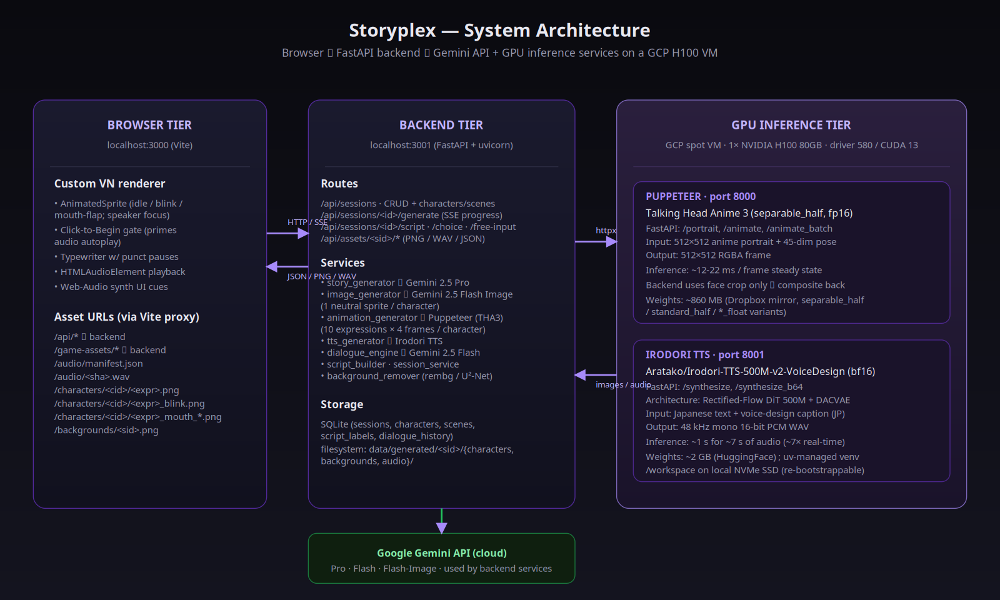
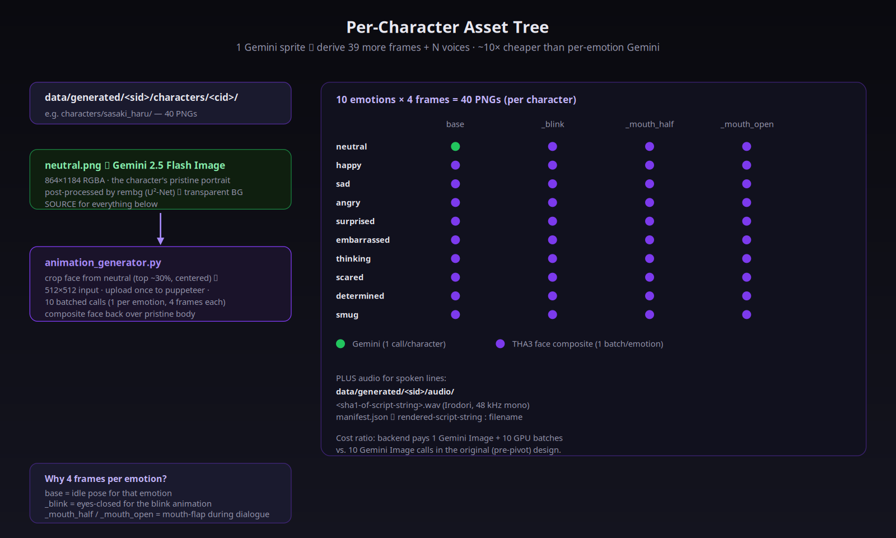
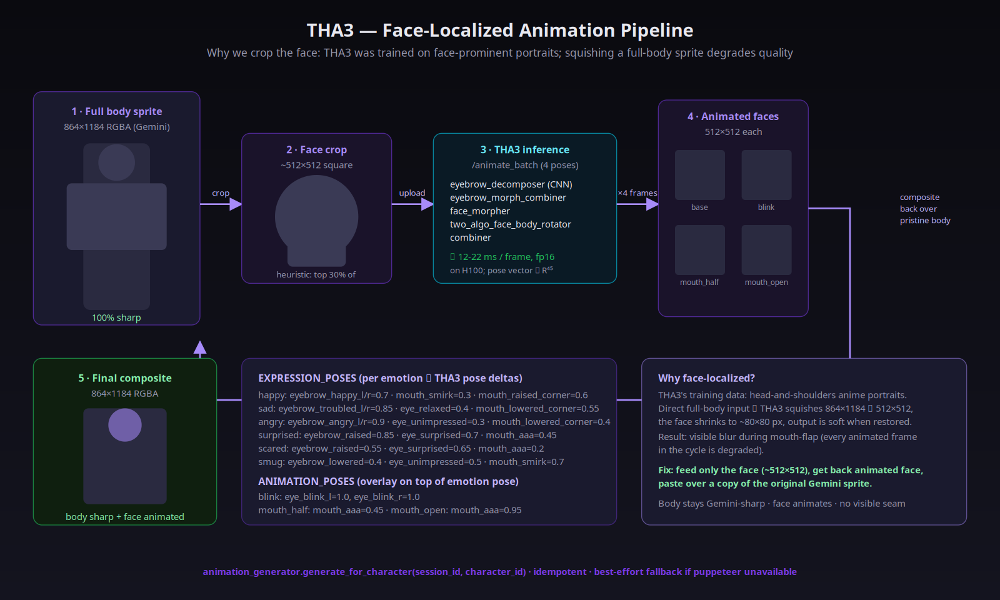
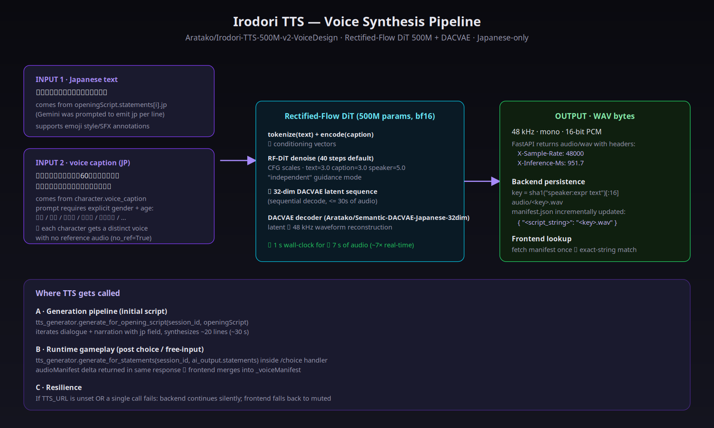
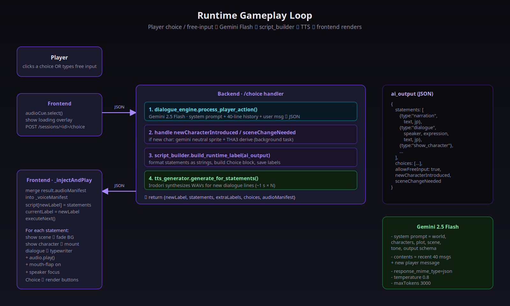
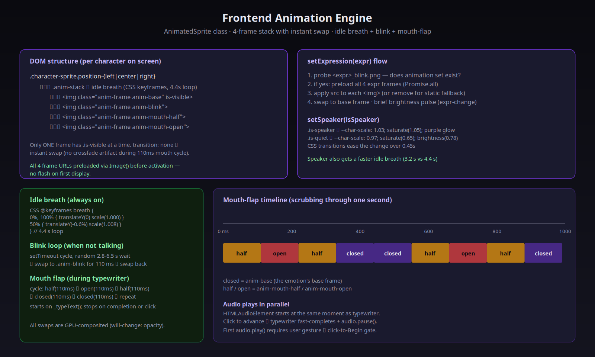
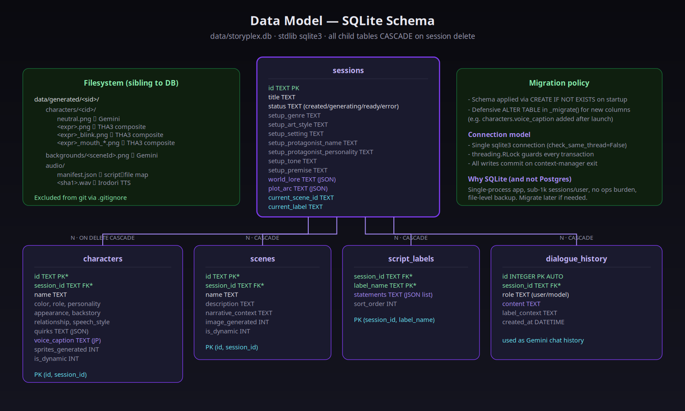

Storyplex generates an entire bespoke visual novel from a short setup form: world, characters with distinct voices, full sprite art, animated faces, scenic backgrounds, an opening script, and per-line Japanese voice acting. Once the player is in the game, the AI continues the story turn-by-turn — each choice or free-text input produces fresh dialogue with new audio synthesized in seconds.
A new session ("Generate Story" → game ready) takes approximately 5 minutes. The bulk of the time is Gemini Pro story generation (~30-60s) and Gemini Image sprite generation (~30s × N characters). Animations and voices are GPU-bound on the H100 and add roughly 30 seconds combined.
Three tiers, three trust boundaries. The browser only talks to the backend (Vite proxy maps both /api/* and /game-assets/* to the FastAPI server). The backend talks to Gemini in the cloud and to the two GPU services running on a single GCP H100 spot VM. The two GPU services are isolated processes in separate uv-managed virtualenvs sharing the same NVMe scratch disk.

uv venvs.| Layer | Tool / version | Why |
|---|---|---|
| Frontend | Vite 6 · vanilla ES modules | Zero framework overhead; we own ~15 JS files including a custom VN engine |
| Backend | FastAPI 0.115 · uvicorn · Python 3.13 | Async I/O, Pydantic schemas, hot reload; SSE for generation progress |
| DB | SQLite (stdlib) | Single-process app; no ops; file-level backup |
| Story / dialogue | google-genai Python SDK | Gemini 2.5 Pro for story · Gemini 2.5 Flash for runtime dialogue |
| Sprites / backgrounds | Gemini 2.5 Flash Image | Native multimodal image gen; ~$$$ per call vs. 10× the cost on alternatives |
| BG removal | rembg (U²-Net) | Reliable transparent cutouts on stylized art; soft dependency |
| Animation | Talking Head Anime 3 · separable_half · fp16 | Face puppeteering with a 45-dim pose vector; 12-22 ms / frame on H100 |
| TTS | Aratako/Irodori-TTS-500M-v2-VoiceDesign · bf16 | RF-DiT 500M + DACVAE; voice-design captions in JP; no reference audio needed |
| Runtime image | Pillow 12 | Face crop + composite; PNG re-encode |
| HTTP client | httpx | Backend → puppeteer / TTS |
| GPU venv | uv + Python 3.10 | Isolated venvs per service; reproducible installs; fast on cold spot boots |
| Cloud | GCP Compute Engine spot VM, 1× H100 80GB, Ubuntu 22.04 | Idle between sessions; ~$2–3/hr while running |
Everything that defines a session — the world, ~3-5 characters, plot arc, ~5 background scenes, and a 20-40 statement opening script — is produced in one Gemini 2.5 Pro call.
response_mime_type: application/json kills the markdown wrapping problem.The world-building prompt (app/services/ai/prompts/world_building.py) demands a precise schema:
{
"worldLore": { name, description, rules[], history },
"characters": [{ id, name, age, role, personality, appearance, backstory,
relationshipToProtagonist, speechStyle, quirks[], color, voiceCaption }],
"plotArc": { premise, act1, act2, act3, themes[], possibleEndings[] },
"initialScenes": [{ id, name, description, narrativeContext }],
"openingScript": [{ type, speaker, expression, text, jp, sceneId, characterId, position, choices[] }]
}
Two fields earn their keep:
voiceCaption — a Japanese description of each character's voice (gender + age + tone + pace). The prompt requires the caption to start with explicit 女性 / 男性 / 男の子 / … so the TTS engine renders distinguishable voices per character.jp — a natural Japanese version of every dialogue and narration line, matching the speaker's personality. This is what the TTS engine actually speaks; the text field stays in the player's language for the dialogue box.json.loads, code-fenced extraction, and slice-from-first-{-to-last-}. Failure raises and the generation pipeline marks the session error.Storyplex used to generate 10 separate Gemini Image calls per character (one per emotion: happy, sad, angry, …). That cost ~$0.5–1 per character and took ~5 minutes for a session with 3-5 characters. Worse, Gemini sometimes drifted between expressions — slightly different clothing, hair length, or face shape — even with the previous frame as reference.
Once we had the THA3 puppeteer running, we realized THA3's 45-dim pose vector covers all the deformations a per-emotion Gemini call was producing: eyebrow shapes (troubled, angry, lowered, raised, happy, serious), eye shapes (wink, surprised, relaxed, unimpressed), mouth shapes (aaa, iii, uuu, eee, ooo, smirk, raised/lowered corners), iris position, head pose. So we cut Gemini calls down to 1 neutral sprite per character and derive the other 9 expressions from it via THA3 pose deltas.
Per character: 1 Gemini Image vs 10. ~10× cheaper, faster, and with the same (or better) output quality.
All 10 expressions are warps of the same source image. Clothing, hair, body shape are guaranteed identical — no Gemini drift.
THA3 only does facial-muscle deformations. Extreme moments ("tears streaming, body trembling") may need a one-off Gemini call later — easy to add.

audio/.THA3 (Talking Head Anime 3, by pkhungurn) is a single-image puppeteering model trained on face-prominent anime portraits. Given a 512×512 input portrait and a 45-dim pose vector, it returns an animated 512×512 RGBA frame in ~12-22 ms on an H100.
Storyplex sprites are 864×1184 (3:4) head-to-feet portraits. Feeding one directly to THA3 squishes it to 512×512 — the face shrinks from ~200 px tall to ~80 px. The model warps that tiny face, returns a 512×512, and we stretch back to 864×1184. The result is visibly soft compared to the Gemini neutral. During mouth-flap, every frame in the 5-frame cycle is a degraded copy. The player sees a sharp body until dialogue starts, then everything blurs.
For each character we (1) heuristically crop the face region, (2) feed only that to THA3, (3) resize the THA3 output back to the face-crop size, (4) paste it over a copy of the pristine Gemini body. Body stays Gemini-sharp; only the face animates. There's no visible seam because the alpha channels of body and face crop are continuous.

EXPRESSION_POSES.Each expression is described as a sparse dict over THA3's named pose keys. Animation overlays stack on top:
EXPRESSION_POSES["happy"] = {
"eyebrow_happy_l": 0.7, "eyebrow_happy_r": 0.7,
"mouth_raised_corner_l": 0.6, "mouth_raised_corner_r": 0.6, "mouth_smirk": 0.3,
}
ANIMATION_POSES["mouth_open"] = { "mouth_aaa": 0.95 }
# Per-frame pose for happy + open mouth:
pose = {**EXPRESSION_POSES["happy"], **ANIMATION_POSES["mouth_open"]}
The puppeteer's /animate_batch endpoint accepts N named poses per request. We send 4 poses per emotion (base + blink + mouth_half + mouth_open) and get back 4 PNGs in one round-trip — kills HTTP overhead.
Each frame is keyed by its emotion and animation variant on disk. Re-running generate_for_character() after a partial failure resumes from the missing frames; existing frames are skipped. A spot-instance preemption mid-generation can be recovered by re-running the pipeline.
Aratako/Irodori-TTS-500M-v2-VoiceDesign is a Rectified-Flow Diffusion Transformer (~500M parameters) paired with a DACVAE codec for waveform reconstruction. It's Japanese-only, supports zero-shot voice design from a text caption (no reference audio required), and produces 48 kHz high-fidelity audio.

The world-building prompt requires voiceCaption to start with explicit gender + age in Japanese:
「穏やかで温かみのある60代の女性の声。ゆっくりとした口調で、優しく話す。」 # cafe owner 「少し不機嫌でぶっきらぼうな20代後半の男性の声。低めのトーンで、ぼそぼそと話す。」 # grumpy regular 「元気で明るい10代後半の女の子の声。少し早口で、感情豊かに話す。」 # cheerful friend
The captions are passed verbatim to Irodori's SamplingRequest.caption. With no_ref=True the model designs the voice purely from the caption — no reference audio plumbing needed.
For each rendered script line (e.g. "sasaki_haru:happy Ah, you must be Aiko-chan.") we compute sha1(line)[:16] and save the WAV at audio/<hash>.wav. A manifest.json in the same folder maps every script string to its filename. The frontend fetches the manifest once on game load and looks up the audio by exact-string match for each dialogue line.
audioManifest. The frontend extends its in-memory manifest and the next dialogue line plays its voice immediately.If TTS_URL is unset, the pipeline silently skips voice synthesis. If a single Irodori call fails, we log a warning and continue. The frontend handles missing audio by simply not playing — typewriter still works.
Once the player is in the game, every choice or free-text input becomes a single POST /api/sessions/<id>/choice (or /free-input). The handler does the full work synchronously so the response carries everything the frontend needs to keep playing.

dialogue_engine calls Gemini Flash with system prompt + recent 40-message history; script_builder formats statements into the script-label string protocol; tts_generator renders any new dialogue lines and returns the manifest delta in the same response.The system prompt encodes world lore, characters with their speech styles, plot arc, current scene, and the strict output JSON shape. The chat history (last 40 lines) is sent as contents with alternating user/model roles. Gemini Flash returns the next segment as {statements[], choices[], allowFreeInput, newCharacterIntroduced?, sceneChangeNeeded?} with each dialogue/narration including a jp field.
If the AI introduces a brand-new character mid-game, the response sets newCharacterIntroduced. The handler:
characters with is_dynamic=1Same idea for sceneChangeNeeded — Gemini Image renders a fresh background. The frontend gets enough payload to render immediately and progressively gains the rest as it loads.
The frontend is vanilla JS — no React, no Vue. The custom VN engine is two files: game-bridge.js (script execution + dialogue + choices + audio) and animated-sprite.js (per-character animation state).

.anim-stack div that runs an idle-breath CSS animation. Frame swaps are opacity: 1↔0 with transition: none — instant on the GPU compositor.translateY(-0.6%) scale(1.008) over 4.4s. Speakers get a faster 3.2s loop.setTimeout loop with random 2.8-6.5s wait; swap to .anim-blink for 110ms then back. Suppressed during talking._typeText() is called, stops on completion or click. Cycles half → open → half → closed → closed every 110ms. The browser composites pre-loaded images on the GPU; no flicker.When dialogue starts, the speaker's sprite gets .is-speaker (slight scale up + saturated drop-shadow) and all other on-screen characters get .is-quiet (desaturate + dim). 0.45s ease transition.
Typewriter speed is 22ms/char with longer pauses on .!? (220ms) and ,;: (110ms). Audio plays in parallel — first user click on the Begin gate primes the AudioContext so subsequent audio.play() calls aren't blocked by browser autoplay policy.
Two services on one VM: the THA3 puppeteer on port 8000 and the Irodori TTS on port 8001. They run in separate uv-managed venvs because their PyTorch / CUDA combos differ. Both bind 0.0.0.0 and share the GPU (~6 GB combined VRAM out of 80 GB available).
Spot instances can preempt at any time and lose all local NVMe data. Each service ships with a self-contained bootstrap script that brings up the entire environment from a fresh VM:
scripts/bootstrap_inference_vm.sh # THA3 → mounts first unformatted local NVMe at /workspace → installs uv to ~/.local/bin → creates py3.10 venv at /workspace/venvs/tha3 → clones THA3 repo → installs torch 2.3.1+cu121 + matplotlib + scipy + fastapi + ... → downloads ~860 MB weights from Dropbox, re-nests under data/models/ scripts/bootstrap_tts_vm.sh # Irodori → uv sync inside the Irodori-TTS clone (its own pyproject) → pre-fetches the HF checkpoint + DACVAE codec → writes /workspace/run_tts.sh runner
The VM has the http-server tag, which the existing GCP firewall rule allow-tts-8000 uses (and we added allow-puppeteer-tts-8001 for the second port). Both services are reachable on the VM's external IP at :8000 and :8001. The backend points at them via PUPPETEER_URL / TTS_URL env vars.
0.0.0.0/0 with no auth. Acceptable for dev. For prod, restrict source ranges or front with an authenticated reverse proxy./workspace/ # local NVMe SSD (ephemeral)
├── repos/
│ ├── talking-head-anime-3-demo/ # THA3 source
│ └── Irodori-TTS/ # Irodori source
├── venvs/
│ └── tha3/ # uv venv for puppeteer
├── weights/
│ └── tha3/models/{separable_half,...}/ # ~860 MB
├── inference/
│ └── server.py # puppeteer wrapper
├── tts/
│ └── tts_server.py # Irodori wrapper
├── run_inference.sh # convenience starter
└── run_tts.sh # convenience starter
| Step | Model | Time | Notes |
|---|---|---|---|
| Story / opening script | Gemini 2.5 Pro | ~30-60 s | Single ~30 KB JSON; response_mime_type=json |
| Per-character neutral sprite | Gemini 2.5 Flash Image | ~25 s + ~10 s rembg | One call per character; 864×1184 RGBA out |
| Per-emotion frame batch | THA3 (separable_half, fp16) | ~250 ms / batch of 4 | ~12-22 ms/frame raw + HTTP RTT; one batch per emotion |
| Per-scene background | Gemini 2.5 Flash Image | ~10-15 s | 5 backgrounds per session |
| Per-line voice | Irodori (bf16, 40 steps) | ~1 s for ~7 s audio | ~7× real-time on H100; 48 kHz mono PCM |
| Per-turn dialogue (runtime) | Gemini 2.5 Flash + TTS | ~3-5 s | Includes TTS for ~5-15 new lines |
Both GPU services pre-warm at startup: THA3 loads its 5 sub-modules into GPU memory (~250 ms), Irodori loads the 500M DiT plus DACVAE (~3 s). First request after a cold boot is ~770 ms (THA3) and ~1.2 s (Irodori) due to CUDA kernel JIT — steady-state numbers above kick in from the second request.
For a 4-character session: ~5 minutes total wall-clock. Story (~45s) + 4× sprite gen (~140s) + 4× anim derive (~25s) + 5× background gen (~60s) + script build (instant) + ~20× TTS (~25s).
Schema is intentionally small — five tables and a sibling filesystem tree under data/generated/<sid>/. The generated folder is not stored in git and is treated as a derived artifact: re-runnable from the database alone (sprite + animation + voice).

characters.voice_caption is added via a defensive _migrate() on startup since SQLite's CREATE IF NOT EXISTS doesn't add columns to existing tables.# 1. Install backend deps cd server && pip install -r requirements.txt # 2. Set env vars in repo-root .env GEMINI_API_KEY=... PORT_SERVER=3001 PORT_CLIENT=3000 PUPPETEER_URL=http://<vm-external-ip>:8000 TTS_URL=http://<vm-external-ip>:8001 # 3. Start both servers npm run dev:server # uvicorn :3001 npm run dev:client # vite :3000 # 4. Open http://localhost:3000
gcloud compute scp scripts/bootstrap_inference_vm.sh \
muga-spot-1xh100:~/ --zone=us-east4-a --project=rumik-ai
gcloud compute ssh muga-spot-1xh100 --zone=us-east4-a --project=rumik-ai \
--command='bash ~/bootstrap_inference_vm.sh && bash ~/bootstrap_tts_vm.sh'
gcloud compute ssh muga-spot-1xh100 --zone=us-east4-a --project=rumik-ai \
--command='nohup /workspace/run_inference.sh &> /workspace/logs/server.log & \
nohup /workspace/run_tts.sh &> /workspace/logs/tts_server.log &'
curl http://localhost:3001/api/health # backend curl http://localhost:3000/ # frontend curl http://<vm-ip>:8000/health # puppeteer curl http://<vm-ip>:8001/health # TTS
The previous iteration shipped a Gemini-driven visual novel built on the Monogatari VN engine with a Node.js + Express backend. It generated a story and per-emotion sprite art, but characters were static images and there was no audio. This round we rewrote the stack and bolted on the live-character + Japanese-voice layer.
jp + JP voiceCaptionuv venvs, idempotent bootstrap scriptjp field — multilingual TTSdata/generated/ off local disk to GCS for cross-VM session continuityStoryplex · Internal design doc · v1.0 · April 2026 · 14 sections · 8 diagrams